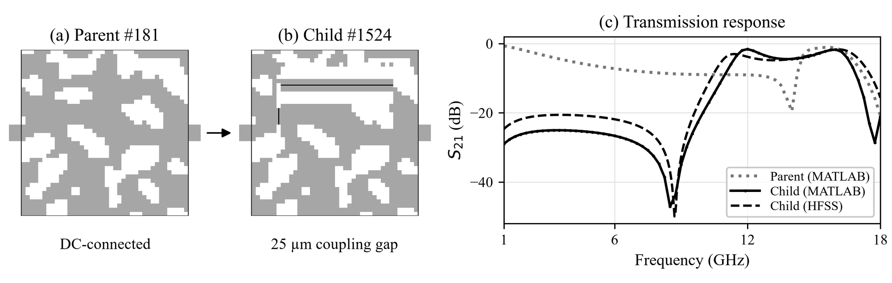

Abstract
- 1Department of Quantum Engineering, Sungkyunkwan University, Republic of Korea
We are developing a simulation-based workflow for compact microstrip filters as a step toward AI-assisted design [1]. Pixel-based band-pass filter design using a genetic algorithm has been reported [2]. The present work explores via-free band-pass formation over 1-18 GHz using a 4 × 4 mm design region discretized into 40 × 40 binary cells. A deterministic rule narrows selected gaps to 25 µm while preserving metal connectivity. Starting from six parents selected from an 8,000-layout dataset, a mutation-based evolutionary search generates coupled-line and pixel modifications. MATLAB method-of-moments simulations evaluate each candidate, and selection considers transmission requirements and passband matching. The search evaluated 1,507 unique layouts and identified 147 band-pass-like candidates that passed a numerical passivity check; none met all target specifications. Candidate #1524 achieved a minimum simulated insertion loss of 1.6 dB at 12 GHz in MATLAB (Fig. 1). An HFSS cross-check reproduced the transmission notch near 8.7 GHz, with a mean absolute S21 difference of 4.0 dB over 1-18 GHz. Differences in matching and upper-stopband rejection remain unresolved. Current efforts focus on improving passband flatness and reconciling the solvers. Surrogate and diffusion-model training, fabrication, and room-temperature and cryogenic measurements are planned as subsequent steps.

- Y. Guo et al., "Dall-EM: Generative AI with Diffusion Models for New Design Space Discovery and Target-to-Electromagnetic Structure Synthesis," Proc. IEEE/MTT-S IMS, pp. 926-929 (2025).
- Y. He, Y.-F. Cheng, and J. Luo, "A Bandpass Filter Realized by Using Pixel Structure and Genetic Algorithm Optimization," Micromachines, vol. 14, no. 7, Art. no. 1389 (2023), doi: 10.3390/mi14071389.